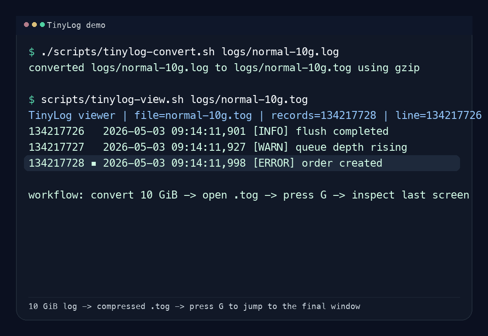

Storage overhead
Plaintext logs repeat structure and metadata on every line. TinyLog compacts that redundancy into a denser binary layout.
Java SDK + Rust Tools
TinyLog is built for high-density log storage and
low-memory log browsing. It turns huge plaintext logs
into a compact .tog format and keeps large-file navigation fast.
.tog storage for better density
Why TinyLog
Plaintext logs repeat structure and metadata on every line. TinyLog compacts that redundancy into a denser binary layout.
Huge log files are expensive to scan in memory. TinyLog uses trunk-based reads to keep browsing and filtering lightweight.
Applications can write through a Java SDK, and operators can inspect the result through dedicated Rust tools.
Project surfaces
Integrate TinyLog into Java services with a business-facing logger API, config-driven appenders, masking, rotation, and direct .tog output.
Convert plaintext logs into .tog, restore them back when needed, and inspect them through a vim-like viewer optimized for large files.
tinylog-converter for convert and reverse restoretinylog-viewer for browse, search, filter, and jumpModules
Domain model, codecs, and reader/writer contracts.
Java API, logger factories, and `.tog` writing integration.
Shared format parsing and protobuf support.
CLI for plaintext-to-`.tog` and reverse restore workflows.
Interactive large-file viewer with trunk-ordered search.
Quick start
scripts/tinylog-convert.sh normal.log
scripts/tinylog-convert.sh --reverse normal.togscripts/tinylog-view.sh normal.tog
scripts/tinylog-open.sh normal.logscripts/package-release.shMore details